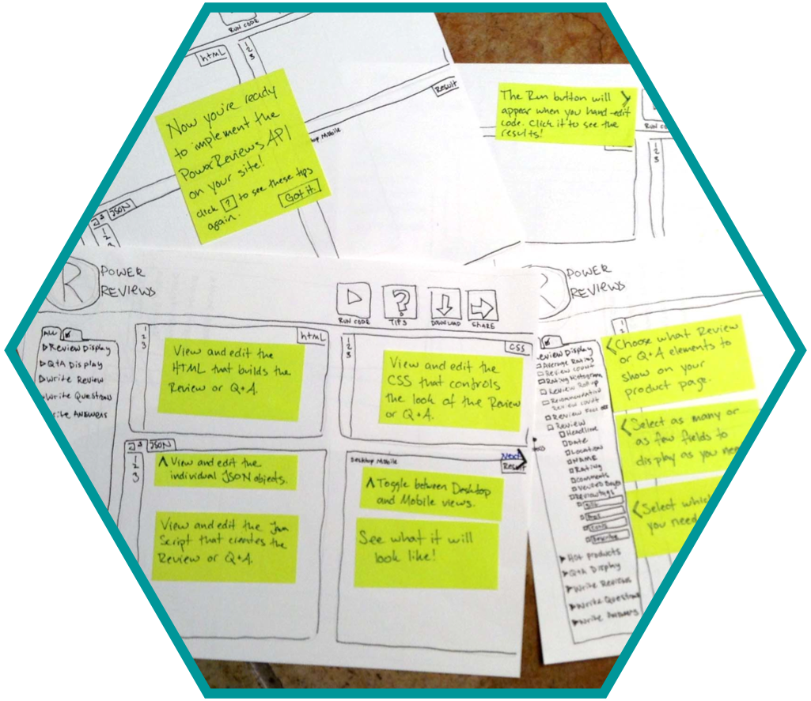
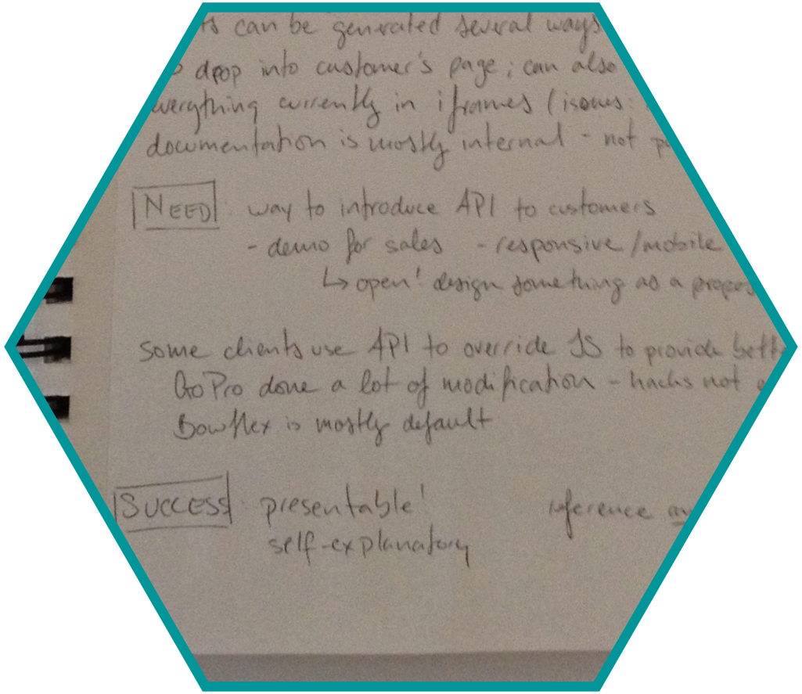
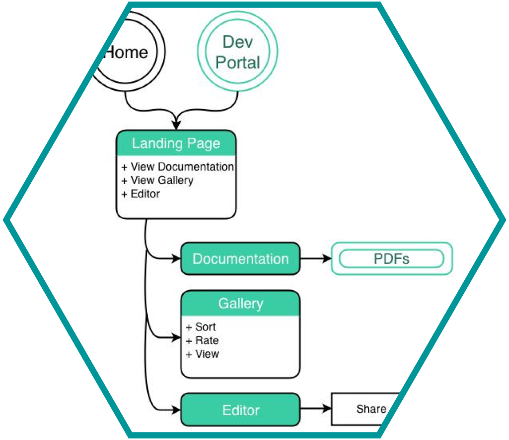

betabrand


Betabrand is an online clothing community based in San Francisco, California. They design, manufacture, and release new products in small batches frequently. Unlike typical e-commerce retailers, Betabrand also offers a highly-curated inventory of fan designed and crowdfunded clothing. Through their website, they want to showcase their range of products while maintaining a quirky, fun and creative brand image.
For this solo project, we were provided with a problem statement, personas and user flows. It required user research and testing, sketches, a paper prototype, wireframes, and a clickable prototype. I also synthesized user feedback, and from that created new Information Architecture and a site map.

cardsorting, looking through the current website, talking to people about current site, looking at competitors, how to differentiate crowdfunding from production
all decisions tied back to "is this necessary?"
working with one of their project managers, getting info about what they are trying to do and highlight
trimming and slimming

incredibly important due to the current lack on the website - biggest way to make an impact, also big pain point
getting ideas on paper to share with others, user testing
moving to higher fidelity for prototype
getting to the prototype stage